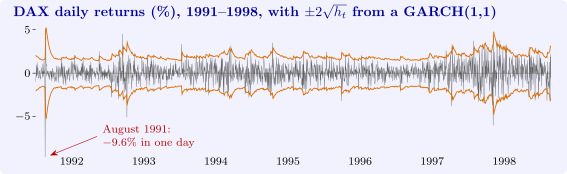

11.6 Autoregressive conditional heteroscedasticity
Financial returns are almost unpredictable in the mean, but their volatility is highly predictable: large changes tend to be followed by large changes, of either sign, and calm periods by calm periods. Figure 11 shows this volatility clustering in eight years of daily returns on the German DAX index. Engle (1982) introduced a model in which the conditional variance depends on past squared disturbances. It was the first model of time-varying volatility, and it earned him the Nobel prize.
Definition 11.6.1. The disturbance \(u_t\) follows an ARCH(\(q\)) process if \[ u_t = \varepsilon _t\sqrt {h_t}, \qquad h_t = \alpha _0 + \alpha _1u_{t-1}^2 + \dots + \alpha _qu_{t-q}^2, \] with \(\varepsilon _t\) independent \(N(0, 1)\), \(\alpha _0 > 0\) and \(\alpha _j \geq 0\). Bollerslev’s GARCH(1,1) process has instead \[ h_t = \omega + \alpha u_{t-1}^2 + \beta h_{t-1}, \qquad \omega > 0,\ \alpha , \beta \geq 0 . \]
Theorem 11.6.2. Let \(u_t\) follow an ARCH(1) process with \(\alpha _1 < 1\), and write \(\mathcal F_{t-1}\) for the information in \(u_{t-1}, u_{t-2}, \dots \).
- (i)
- \(E(u_t \mid \mathcal F_{t-1}) = 0\) and \(\Var (u_t \mid \mathcal F_{t-1}) = h_t\); the \(u_t\) are serially uncorrelated.
- (ii)
- The unconditional variance is \(\sigma ^2 = \alpha _0/(1 - \alpha _1)\), constant over time.
- (iii)
- \(u_t^2\) follows the AR(1) scheme \(u_t^2 = \alpha _0 + \alpha _1u_{t-1}^2 + v_t\), where \(v_t = h_t(\varepsilon _t^2 - 1)\) has \(E(v_t \mid \mathcal F_{t-1}) = 0\).
- (iv)
- If \(3\alpha _1^2 < 1\) the fourth moment exists, and the kurtosis is \[ \frac {E(u_t^4)}{\sigma ^4} = 3\,\frac {1 - \alpha _1^2}{1 - 3\alpha _1^2} > 3 . \]
Proof. (i) Given \(\mathcal F_{t-1}\), \(h_t\) is known and \(\varepsilon _t\) is independent of it, so \(E(u_t \mid \mathcal F_{t-1}) = \sqrt {h_t}E(\varepsilon _t) = 0\) and \(E(u_t^2 \mid \mathcal F_{t-1}) = h_tE(\varepsilon _t^2) = h_t\). For \(s \geq 1\), \(E(u_tu_{t-s}) = E\bigl (u_{t-s}E(u_t \mid \mathcal F_{t-1})\bigr ) = 0\).
(ii) Taking expectations of \(E(u_t^2 \mid \mathcal F_{t-1}) = \alpha _0 + \alpha _1u_{t-1}^2\) gives \(\sigma _t^2 = \alpha _0 + \alpha _1\sigma _{t-1}^2\), whose stationary solution is \(\alpha _0/(1 - \alpha _1)\).
(iii) \(u_t^2 = h_t + h_t(\varepsilon _t^2 - 1) = \alpha _0 + \alpha _1u_{t-1}^2 + v_t\), and \(E(v_t \mid \mathcal F_{t-1}) = h_tE(\varepsilon _t^2 - 1) = 0\).
(iv) \(E(u_t^4 \mid \mathcal F_{t-1}) = h_t^2E(\varepsilon _t^4) = 3h_t^2\). With \(m_4 = E(u_t^4)\), stationarity and (ii), \[ m_4 = 3E(\alpha _0 + \alpha _1u_{t-1}^2)^2 = 3\bigl (\alpha _0^2 + 2\alpha _0\alpha _1\sigma ^2 + \alpha _1^2m_4\bigr ) . \] Solving, \(m_4(1 - 3\alpha _1^2) = 3\alpha _0(\alpha _0 + 2\alpha _1\sigma ^2) = 3\alpha _0^2(1 + \alpha _1)/(1 - \alpha _1)\), which is finite and positive only if \(3\alpha _1^2 < 1\). Dividing by \(\sigma ^4 = \alpha _0^2/(1 - \alpha _1)^2\) gives \(3(1 + \alpha _1)(1 - \alpha _1)/(1 - 3\alpha _1^2)\). It exceeds \(3\) because \(1 - \alpha _1^2 > 1 - 3\alpha _1^2\). □
The theorem explains two stylised facts at once. The returns themselves are serially uncorrelated, so their correlogram is flat; but their squares are autocorrelated, by (iii), so the correlogram of \(u_t^2\) is not. And the unconditional distribution has fat tails, by (iv), even though each conditional distribution is normal: it is a mixture of normals with different variances.
For a regression with ARCH disturbances, least squares remains unbiased, and since the \(u_t\) are unconditionally homoscedastic and serially uncorrelated it is still the best linear unbiased estimator. But maximum likelihood, which weights each observation by \(1/h_t\), is a non-linear estimator and more efficient, and in any case the conditional variances are often the object of interest, for example in pricing options or measuring risk.
Testing and estimation
Part (iii) suggests Engle’s test: regress the squared least squares residuals on a constant and \(q\) of their own lags, \[ e_t^2 = a_0 + a_1e_{t-1}^2 + \dots + a_qe_{t-q}^2 + \text {error}, \] and refer \(\text {LM} = nR^2\) to \(\chi ^2_q\). Engle derived it as the Lagrange multiplier test of \(\alpha _1 = \dots = \alpha _q = 0\); it is the time-series analogue of the Breusch–Pagan test of Theorem 10.3.1, with lagged squared residuals in place of the regressors. Estimation is by maximum likelihood: conditional on starting values, \[ \ell = -\frac 12\sum _{t=1}^n\Bigl (\log (2\pi ) + \log h_t + \frac {u_t^2}{h_t}\Bigr ), \] where \(u_t = Y_t - x_t'\beta \) and \(h_t\) is computed recursively, and \(\ell \) is maximised numerically.
In the GARCH(1,1) model, \(u_t^2 = \omega + (\alpha + \beta )u_{t-1}^2 + v_t - \beta v_{t-1}\) by the argument of (iii), so the squared disturbances follow an ARMA(1,1) scheme. The unconditional variance is \(\omega /(1 - \alpha - \beta )\) when \(\alpha + \beta < 1\), and the persistence \(\alpha + \beta \) governs how fast a volatility shock dies away: its half-life is \(\log 0.5/\log (\alpha + \beta )\) periods. A GARCH(1,1) is equivalent to an ARCH(\(\infty \)) with geometrically declining weights, which is why three parameters usually do the work of a long ARCH model.

Questions on this section
Stuck on something here? Ask below and it stays attached to this topic.